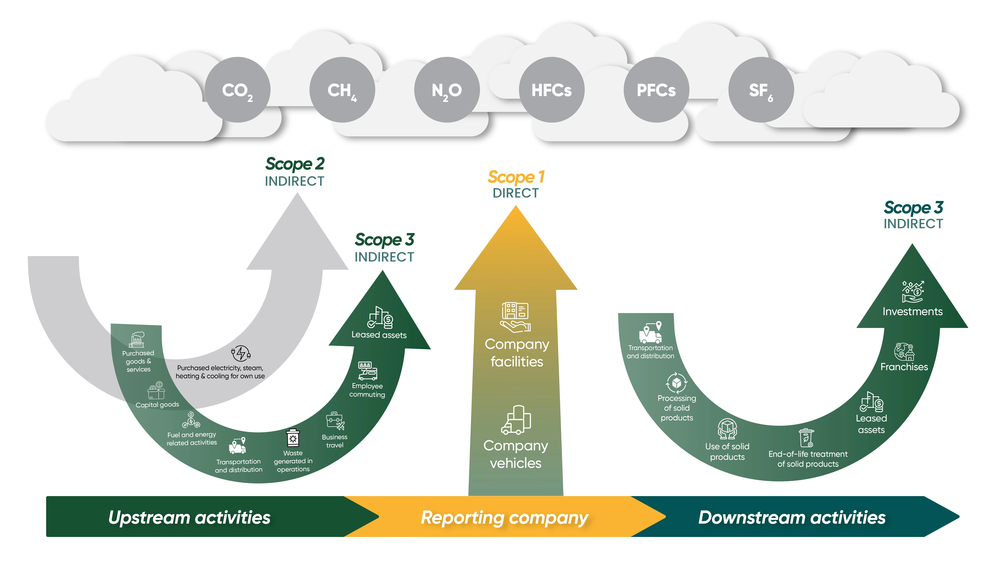

As the world becomes increasingly aware with the adverse effects of climate change, businesses continue to remain under pressure to measure, report, and reduce their carbon footprint. Carbon accounting is no longer a voluntary activity but a critical business function. The complexities of the process, however, are daunting and can pose challenges for businesses looking to track and report greenhouse gas (GHG) emissions.
While businesses struggle to measure their data for various, AI and technology extend support are revolutionizing the way organizations approach carbon accounting. At ecoPRISM, we are simplifying carbon accounting with our platform, ensuring businesses are offered the right tools and technology to effectively report their carbon footprint.
Carbon Accounting
Carbon accounting is the systematic process of measuring, tracking, and reporting an organization’s greenhouse gas (GHG) emissions. It encompasses emissions from direct operations (Scope 1), purchased energy (Scope 2), and value chain activities, including suppliers and end-users (Scope 3). The primary goal of carbon accounting is to provide businesses with the data needed to understand their environmental impact, comply with regulatory standards, and identify opportunities for emissions reduction. This process is essential for organizations aiming to meet sustainability goals, improve transparency, and respond to the growing demands of stakeholders and regulators.
Also Read: The Growing Importance of Transparency in ESG Reporting for Sustainable Business Success
Understanding Scopes 1, 2, 3, and 4
Scopes 1, 2, 3, and 4 provide a comprehensive framework for categorizing greenhouse gas (GHG) emissions.
Scope 1 covers direct emissions from owned or controlled sources, such as company vehicles or on-site fuel combustion.
Scope 2 addresses indirect emissions from the consumption of purchased electricity, heat, or steam.
Scope 3 encompasses all other indirect emissions across the value chain, including supplier operations, product use, and waste disposal, often representing the largest share of a company’s carbon footprint.
Emerging as a newer concept, scope 4 focuses on avoided or enabled emissions—the potential reductions achieved through products or services that replace higher-emission alternatives, like renewable energy solutions.
Together, these scopes provide a structured approach to understanding and addressing an organization’s environmental impact.

Scope 4: Beyond Traditional Accounting
Scope 4 represents a forward-looking perspective in carbon accounting by focusing on avoided or enabled emissions. These emissions refer to the potential reductions achieved through innovative products, services, or technologies that replace higher-emission alternatives. For instance, renewable energy installations, energy-efficient appliances, or electric vehicles can result in avoided emissions by reducing the need for fossil fuel consumption. While not yet a formal part of the GHG Protocol, Scope 4 highlights the proactive role businesses can play in driving systemic change and contributing to global decarbonization efforts
How ecoPRISM Addressed the Challenges in Carbon Accounting?
| Challenge | Advantage of ecoPRISM’s Carbon Footprint Calculator |
|---|---|
| Massive Data Collection | Automated data aggregation from diverse sources ensures accurate and real-time tracking without manual intervention. |
| Interdepartmental Collaboration | Centralized platforms facilitate seamless collaboration and communication across departments, minimizing delays. |
| Complex Data Analysis | Advanced analytics tools process large datasets efficiently, providing actionable insights with reduced errors. |
| Emission Factor Complexity | Built-in libraries and algorithms standardize emission factors, ensuring consistent and accurate calculations. |
| Manpower-Intensive Processes | Automation reduces reliance on manual labour, freeing up resources for strategic initiatives. |
| Data Validation Challenges | Integrated validation mechanisms and error-checking ensure data accuracy and reliability. |
| Repetition for Audits | Audit-ready reports and secure data storage eliminate the need to repeat processes, streamlining compliance efforts. |
Also Read: Mastering Your First CSRD Report: Key Tips for Success
Additional Functions of ecoPRISM
- Actionable Insights : Advanced analytics and visualization tools help organizations identify high-emission areas and prioritize reduction efforts. Dashboards and reports provide actionable insights, enabling data-driven decision-making.
- Scalability and Flexibility : ecoPRISM is scalable and can adapt to the needs of businesses of all sizes. Whether you’re a small startup or a multinational corporation, these tools can grow with your organization and accommodate complex supply chains.
- Cost-Effectiveness : Traditional carbon accounting methods often require significant investments in software, hardware, and personnel. ecoPRISM on the other hand, operate on a subscription model, reducing upfront costs and providing access to cutting-edge technology.
- Regulatory Compliance : ecoPRISM is designed to align with global reporting standards and provide audit-ready reports. This makes it easier for companies to comply with regulations and demonstrate transparency to stakeholders.
- Emission Factor Complexity: Accurately identifying emission factors for various activities and materials is a nuanced process, frequently leading to discrepancies and inconsistencies.
ecoPRISM poses as an efficient solution for organizations looking to streamline their carbon accounting efforts. By addressing the challenges of data collection, interdepartmental collaboration, and complex data analysis through automation and advanced analytics, ecoPRISM empowers businesses to track and reduce their greenhouse gas emissions efficiently.
As businesses face increasing pressure to meet sustainability goals and comply with regulations, ecoPRISM not only simplifies the carbon accounting process but also enables organizations to take proactive steps toward a more sustainable future. With tools like ecoPRISM, the path to meaningful climate action becomes clearer and more achievable. Talk to us today and experience the ease of simplified carbon accounting.